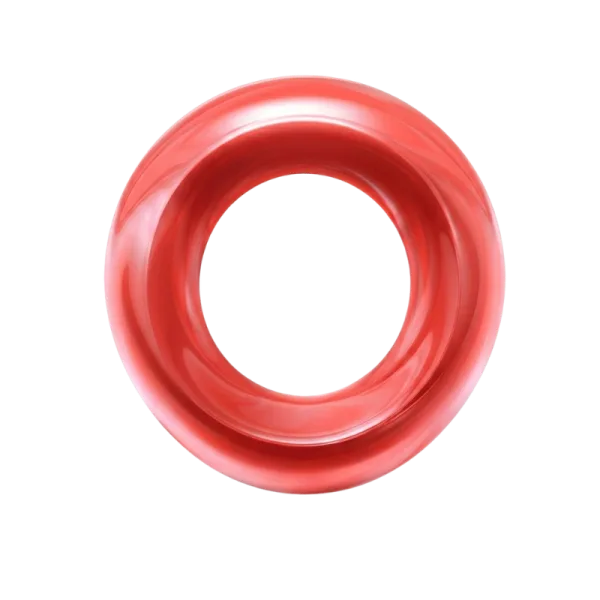
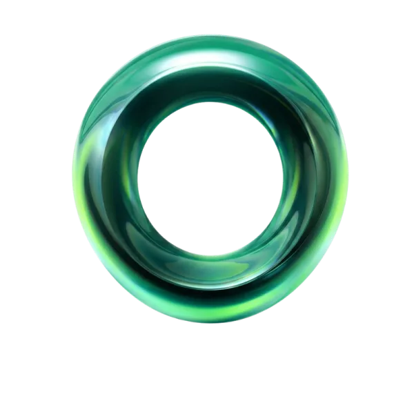

Mi papel no es decirte qué hacer. Es ayudarte a descubrir el mejor camino para tu empresa.
Hay empresas
que necesitan publicidad. Otras necesitan alguien
que les ayude a pensar.
Si llegaste hasta aquí, probablemente perteneces al segundo grupo.

Soy Karen Santiago.
Trabajo junto a empresarios que quieren construir marcas con visión de largo plazo, entender mejor a sus clientes y tomar decisiones con mayor claridad.
Hago preguntas
Antes de proponer, escucho y entiendo a fondo tu negocio.
Aporto perspectiva
Te muestro lo que hoy no estás viendo y puede hacer la diferencia.
Construimos juntos
Diseñamos el camino estratégico que realmente necesitas.
Un equipo que respalda cada etapa
Boreal cuenta con un equipo profesional especializado en:

Brandingy desarrollo de identidad

Performance digitaly campañas

Diseñoy programación web

Dirección creativay producción de contenido
- es… Estrategia
con estructura - Creatividadcon propósito
- Desarrollo digital a medida
- Activación conretorno medible
- Acompañamientocercano y profesional